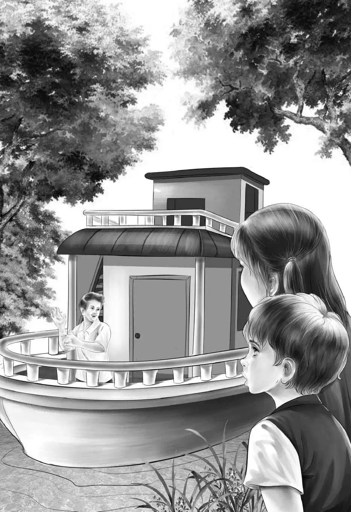

Chapter 1 Houseboat for Rent
七月里炎热的一天，奥登家的四个孩子正和爷爷一起坐在树下——这是他们能找到的最凉快的地方了。
“好热啊！”班尼·奥登建议道，“我们坐车去兜风吧。”
“好主意！”奥登爷爷看着四个孩子说。他站起身，继续说道，“我正盼着有人能想出好点子来呢！亨利——”
亨利是班尼的哥哥，但此刻他却没了踪影。这时，只听见从车库里传来一阵响声——是亨利正将那辆旅行车开出来。
杰西用一块大手帕擦了擦脸上的汗。“咱们就开着车，直到凉快为止，”她说，“天气预报说，这炎热的天气要持续一周的时间呢。”
这时，趴在杰西脚边的望望摇了摇尾巴——它是奥登家的小狗狗。“好啦，望望，你也可以和我们一起去。”杰西说。
望望叫了一声，一路小跑地跟在奥登一家人身旁。维莉挽着爷爷的胳膊说：“咱们家的人总是会想出最好的点子。您不觉得吗，爷爷？”
“是啊，的确如此，”奥登先生冲小孙女笑了笑，“只要需要，总有人能想出些主意来。”
“怪有趣的，”杰西说，“在咱们家，总会碰到意外的惊喜。就比如说，刚才我觉得想凉爽起来不太可能，可待会儿车一开，马上就会凉快的。”
亨利把车停在了车道上，孩子们和爷爷上了车——当然，还有望望。就这样，奥登一家出发了。车窗敞开着，车沿着笔直的公路前行。亨利不禁说道：“班尼，还好你想到了这个主意，我现在感觉凉快多了。”
行驶了一个多小时后，亨利看到公路左边的一个路牌上标注着“河间路”，于是他向左拐去，沿着河畔小路前行。
“太棒了，”班尼说，“这个地方更凉快呢。我们以前好像从没来过这里。”
杰西说：“亨利，也用不着开这么快吧？我的头发都被风给吹直了。”
幸好亨利放慢了速度，否则，奥登一家恐怕就要错过接下来刺激的历险了。但此时，谁也不会想到接下来会发生什么。
美丽的小河缓缓地流淌着，河的两边是清爽的绿色堤岸，绿树成荫。这时，亨利把车速放得更慢了。
“我听到有口哨声。”他说。大伙都竖起耳朵仔细倾听，果然，他们也听到了，声音是从河的下游传来的。
就在这时，车子行驶到一条岔路前，这条路一直通向河边，亨利停了车，他们朝小路望去。
“那个……到底是什么啊？”班尼一脸疑问，“是船吗？”他说着，指了指一座小房子，那房子似乎在水上漂着。
“那是船屋，我敢肯定！”爷爷开口了，“我可是很久很久都没见过船屋了。”
“咱们开过去吧，”亨利提议，“看看到底是怎么回事。天哪，这条路真难走！幸好不长。”他缓缓地开着车，沿着崎岖的岔路，一直开到河边。
大家打量着眼前的小房子：它有四扇窗户，两架梯子可以直接通向屋顶——一端的上方有个蓝色的遮阳篷，刚好可以遮住船屋前的甲板。船身和屋顶分别围着一圈扶栏。在这座船屋的甲板上，坐着一个男人——刚才就是他在吹口哨。
“嗨，各位！”他叫道，“想看看船屋吗？我叫大河。”
奥登一家下了车，走上前去，想仔细看看这个陌生人，还有这条奇怪的船。这座船屋停靠在水边，被一根缆绳拴在小码头上。
班尼看到船头写着“蓝鹭”两个深蓝色的字,于是问道：“你为什么给它取这个名字？”
“这可不是我取的，”大河先生说，“是刚刚离开的那对夫妇取的名儿。是这样的，任何租住这座船屋的人都可以给它命名。上来吧，我带你们参观一下。从码头上跨过来就行。”说着，他取下一条铁链，在扶栏上打开了一个入口。
这时，望望开始呜呜地叫起来。“别担心，望望，”杰西说，“你不用去，就坐在这里等着吧。”
奥登一家人登上了船屋，只留下望望蹲在码头上。
大河先生解开系在墙上的一个架子，把它拿了下来。
“所有的字母都在这儿，”他说，“租这条船的人会在这里挑出一些字母，然后拼成他们喜欢的名字。你们可能会觉得有些名字很滑稽可笑：有一对夫妇给这条船起了个名字叫‘摇滚’；还有人叫它‘登月火箭’；还有一家人因为旅途疲劳，索性就叫它‘大酒店’。”
班尼笑了：“给船取名，好有意思！咱们甚至可以每天都给它取个新名字。今天是第一天，我们就用爷爷的名字好了——詹姆斯·H·奥登。明天，它的名字就改成‘亨利·詹姆斯·奥登’，然后就这样一直取下去。”
大家都笑了起来，大河先生说：“我猜，你一定是你们家最精怪古灵的小家伙。我觉得你超逗。”
“大河先生，班尼这么说，好像我们真要租下这条船似的，”杰西说，“真是这样的话，会很带劲的。甲板上有椅子，我想这是您平时在遮阳伞下乘凉的地方吧？”
大河先生笑了笑，他指着这座船屋的平顶说：“没错！如果你们想要一身古铜色的皮肤，只管顺着梯子爬上去，躺着晒太阳就行了。”
“快看窗上的白窗帘啊，好漂亮！把船屋变得跟玩具屋一样呢！”维莉说道。
奥登先生也一直在打量这座船屋，这时，他把目光转向了大河先生，看上去对船屋颇为喜欢。“这条船是你的吗？”他问道。

“是的，”大河先生回答道，“我按周出租。大家看起来都很喜欢它。上一个租户是今天离开的，这家人在走之前很是不情愿呢。我已经把船屋打扫干净了，好迎接下一个租户。你们不妨四处转转！”
“哦，爷爷，咱们看看它吧！”杰西恳求道。
“这座船屋就像一艘平底船，”亨利说道，他趴在扶栏上，探头向水里望去，“又像个木筏子，我敢说它速度肯定不快。”
“没错，”大河先生接过话来，“事实上，它几乎是顺流漂浮。如果你们想上岸，可以用那两根撑杆让它靠岸停下。要想逆流行驶的话，就得开动船尾的马达了。”
爷爷说：“嗯，这条小河看起来水流很平缓。不得不承认，住在这里一定很舒服宁静，能得到很好的休息。当然了，我的这些孩子们在学校里待了一整年，也累坏了，要是可以天天什么都不做，他们也会很欢喜的。”
孩子们看着爷爷，知道他是在开玩笑，因为在奥登家，没有人愿意无所事事。
“我们进去看看吧。”杰西提议道。
班尼早就进屋了，他坐在一张床上。“大河先生，我觉得这座船屋对于我们来说不够大，”他说，“我们得要五张床，但这里只有两张。”
“有六张床呢！”大河先生微笑着说。
“在哪儿啊？”班尼四处张望起来，但是并没有看见多余的床铺。
大河先生说：“船屋不能太大，所有的东西都得井然有序才行，否则，是装不下所有东西的。另外几张床在这里。”说着，他从墙上拉下来一张床。
“太神奇了！”班尼很吃惊，“真是太妙了。现在我明白那几张床在哪儿了，上面都挂着帘子呢。”
“我猜，这水槽下面就是水箱吧？”亨利说着，揭开了上边的盖子，“河水是不能喝的，对吧？”
“是的，你们只能上岸去买饮用水和日用品。这条河道上，很多地方都可以买到水、冰和其他物品。不过，河水可以用来洗东西。”
“爷爷，咱们走吧！”班尼说。
奥登一家都明白班尼的意思，他想要租下这座船屋，而且明天就要住进来。这就是奥登家做事的风格——雷厉风行。
但是这一次奥登先生却不紧不慢。他拍了拍班尼的肩膀说：“别着急，班尼，我们最起码得知道怎样才能驾驭这条船！”
“我知道该怎么做。”亨利说道。
大家把目光都投向亨利。“你怎么知道，亨利？”班尼问道。
“呃，你们还记得有一个周末，我去拜访学校的一个同学吗？他家就有一条船，和这座船屋差不多，就是那个时候我学会了开船。那一次我们玩得可高兴了！如果我们想要上岸的话，班尼只需帮我用撑杆撑船就行。想回家的话，我也知道该怎么开动侧舷的马达。”
“哇，真幸运！”杰西欢呼了起来。很显然，她也想住在船屋里。
维莉说：“如果我们不喜欢的话，随时都可以回来，对吧？”
这话也坚定了奥登先生的信心——他自己也真的想试试。
大河先生说：“船屋很安全，而且这条河没什么险滩，无论你们晚上想在哪里抛锚都可以。虽然这条河上没有太多的船，但还是要提防不要被撞上。小伙子，你了解信号灯么？”
“了解，”亨利说，“从日落到第二天日出，要确保水面上方八英尺左右有白色灯光，这样才能保证其他船只在一英里外就能看到。”
“不错，不错！”大河先生说道，“很厉害呢！你还知道些什么？”
“船上应该有灭火器和救生衣吧？”亨利答道，“还有铃铛吧？我刚才看到了，就在上面。”
大河先生说：“救生衣就在那儿。一共六件。”然后他又指着第一间客舱的舱壁说道：“配备灭火器是法律规定的。我这里还有一个消防桶和一个沙箱，把沙子倒上去也可以灭火。”
班尼俯身读起了消防桶上的字，只见上边印着：
桶内水位不得低于此线
沙箱上也印着一些字：
箱内所盛沙子不得低于此线
大河先生解释说：“这船还从没着过火，大家都很小心。曾经有一家人让孩子们在这儿玩沙，很快就被我制止了。”
“不用担心我们，”班尼说，“我们保证不会玩沙箱里的沙子。再说，我的最后一个桶和小铲子也在很早以前就弄丢了。”
“你很有亲和力，”大河先生说，“也总能制造快乐气氛，是吧？小活宝！”
班尼看着亨利，说：“我觉得你应该来当船长。”
“那你来当我的大副吧。”亨利说。
大河先生说：“好极了！这条船是在海上警卫队注册过的，尽管每次名字都有些不同，但他们对它的状况还是非常了解！”
“噢，咱们出发吧！”班尼说。
“什么时候？”大河先生问道。
“明天，”没等班尼开口，爷爷先作了回答，“明天十点钟，我们会到这儿来。”
看到奥登一家登上码头，望望便呜呜地叫了起来。“你不怎么开心呢，对吧，小家伙？”亨利对望望说道，“来吧，上车！”
趁奥登先生和大河先生谈论租金问题的时候，亨利已经掉转了车头。
“这是钥匙，”大河先生说，“晚上记得锁门。记得去商店时，也要把窗子关好。窗子一关就会自动上锁。”
奥登一家兴奋极了。车子沿着那条崎岖不平的小路行驶起来，他们挥手向大河先生告别。爷爷把钥匙交给了亨利。“拿着，船长。”他说。
大河先生在后面朝他们喊道：“别带太多的东西！”
“嗯，不会的。”杰西也朝他喊道，接着对其他人说，“我们不用带太多衣服吧，只要有泳衣和运动服就行了——不过，爷爷除外。”
爷爷朝班尼眨了眨眼睛，“说不准，我会让你们大吃一惊呢！”
亨利沿着崎岖的岔路小心地驾驶着，在转入河间路之前将车子停了下来。
突然，正前方出现一辆黑色的大轿车，车子呼啸着从河间路冲下来，一个急转从亨利身边擦过，沿岔路朝船屋驶去。两辆车差点撞在一起。
“嘿！这些人在搞什么鬼？”亨利说道。
“呀！”班尼说，“那辆车差一点就撞上我们了！真险啊！”
维莉说：“他们到底去船屋干吗？有谁会这么开车？”
所有人都没了说话的兴致。亨利启动车子，沿着河间路缓缓朝家驶去。“我们的朋友又来了。”他看了眼后视镜，把车开到右边，放慢了速度。那辆黑色轿车呼啸而过。
亨利说：“他们干吗这么急呛呛？到底想对船屋打什么主意？”
班尼开口说：“我看不像是租船的，因为他们没有在那里待多久。但愿以后别再看到他们。”
亨利心里有些纳闷，但什么也没说。